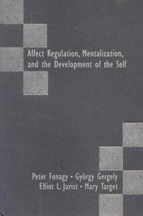

《情感调节、心智化与自体的发展》
书·Peter Fonagy, György Gergely, Elliot Jurist, Mary Target, 2002·Affect Regulation, Mentalization, and the Development of the Self

心智化取向的主要理论著作：说明孩子如何通过被照顾者“当作有心灵的人”对待，发展出理解自己与他人的能力。中译名未核实，此处中文题名为直译或沿用旧数据。
- 作者
- Peter Fonagy, György Gergely, Elliot Jurist, Mary Target
- 年份
- 2002
- 难度
- 深读
- 类型
- 理论原著
- 所属学派
- 心智化
- 核心理论
- 反思功能、基于心智化的治疗
版本
- 英文版 Affect Regulation, Mentalization, and the Development of the Self Peter Fonagy, György Gergely, Elliot L. Jurist, Mary Target · Other Press, first edition · 2002 Open Library ↗